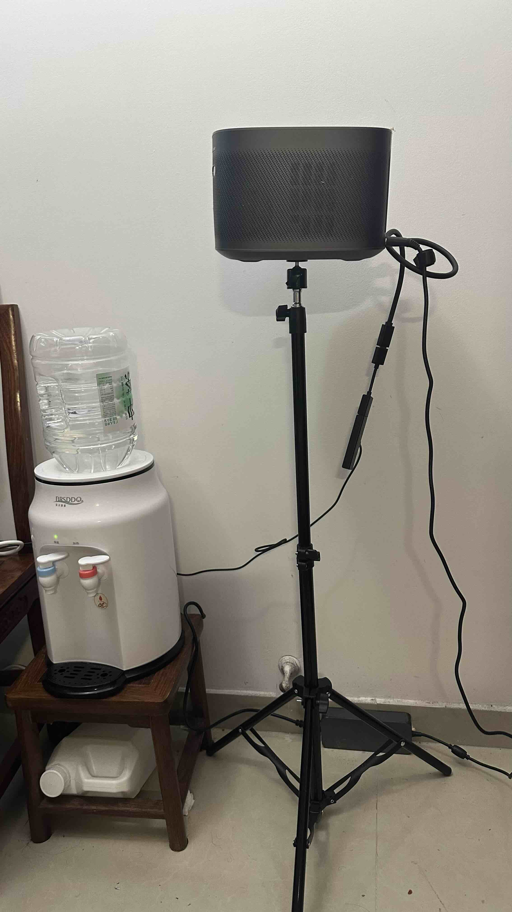

तीन कोण डंडी खड़ा संरचना | मूल, AI द्वारा अनुवादित
मैं हाल ही में संरचनात्मक स्थिरता के बारे में सोच रहा हूँ, विशेष रूप से जब मैंने देखा कि प्रोजेक्टर स्टैंड की ऊंचाई उसके संतुलन को कितना प्रभावित करती है। जब स्टैंड बढ़ाया जाता है, तो भारी प्रोजेक्टर उलटने के लिए बहुत अधिक संवेदनशील हो जाता है। यहां तक कि अगर प्रोजेक्टर पूरी तरह से समतल नहीं है, तो ऊंचाई में थोड़ा सा 10 सेंटीमीटर का बढ़ना, बेस पर बल को नाटकीय रूप से बढ़ाता है, जिससे पूरी सेटअप गिरने के लिए झुकती है।
इसीलिए जब लोग बहुत ऊंची इमारतें बनाते हैं, तो उन्हें नींव को गहरे जमीन में फैलाना पड़ता है। यह सुनिश्चित करता है कि संरचनाएं स्थिर रहें और उन्हें गिरने से रोकता है।
प्रोजेक्टर स्टैंड की अस्थिरता का यह अनुभव मुझे J. E. Gordon की किताब Structures: Or Why Things Don’t Fall Down याद दिलाया, जिसे मैं जल्द ही पढ़ना चाहता हूँ।
 स्रोत: स्वयं कैप्चर किया {: .caption }